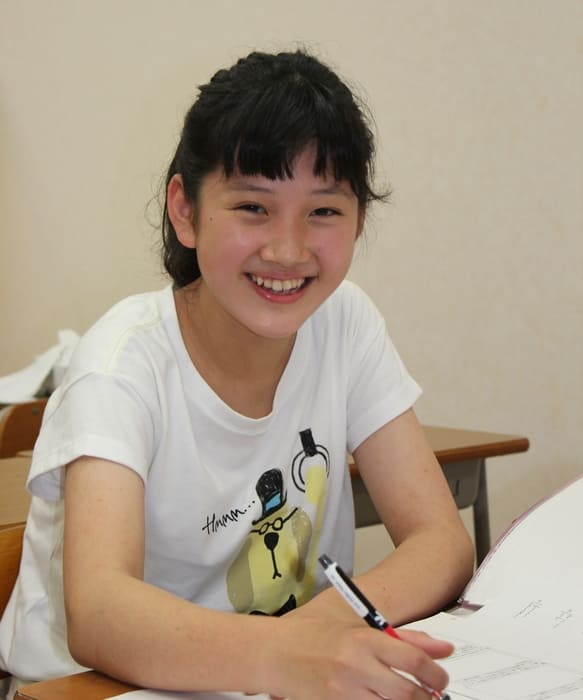
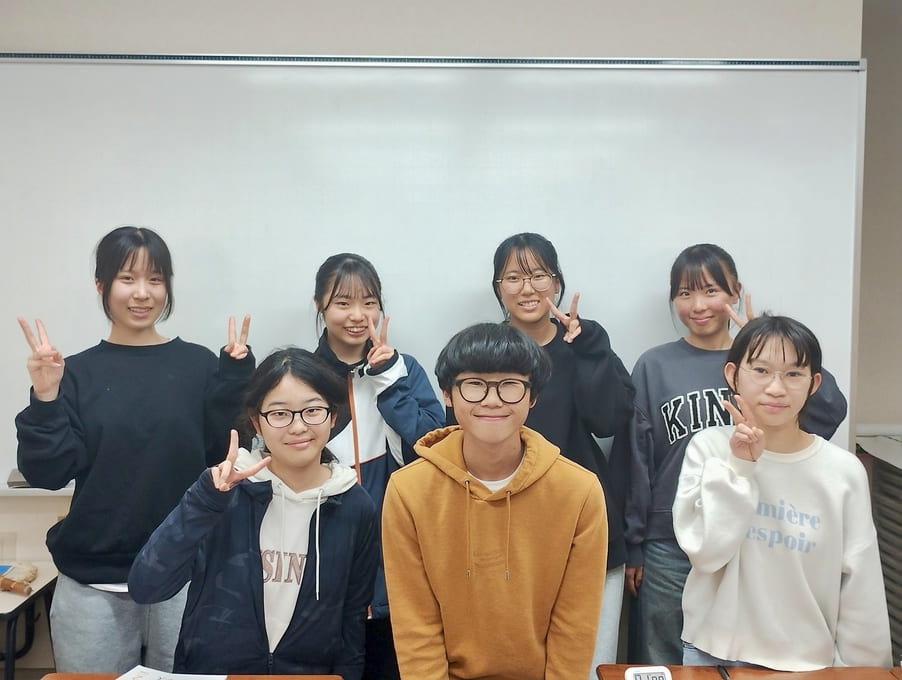
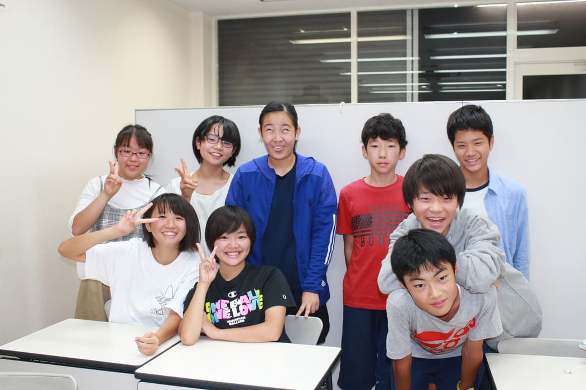

転塾の決断に応えます塾探しが初めての方もお気軽にご相談ください。
まずは無料の体験授業から
＼お申込みはこちら↓／
メール: youichi2007@yahoo.co.jp
電話: 080-5327-4825
EST進学セミナーが選ばれる理由
1
潤沢な時間数があります。
中3の平常授業は、数学と理科だけで1学期は週5時間、2学期以降は週7時間もあります。さらに、定期テスト前には総復習をするために、約10時間の補習を入れています。
また、大手塾では祝日がすべて休講になるだけでなく、平日であっても塾の都合で休みになることが少なくありません。例えば、一学期の中間テストはゴールデンウィーク明けに実施されますが、大手塾ではこの期間を丸々休講とした上で、祝日以外の日まで休みにすることもよくあります。一方、ESTではこの期間こそ重要と考え、平常授業に加えて補習を実施し、丁寧に指導を行っています。
『休みは多い方がいいに決まってるやん』と言う生徒もいるでしょう。しかし、高い授業料を支払って塾に通う目的は何か、改めて考えてみてください。早く結果を出すことの方が大切ではないでしょうか。
『短時間で効率よく』はよく聞くフレーズですが、例えば実績のある部活動を考えてみてください。指導者や競い合う仲間に恵まれて、設備も整っていることが多いので、効率のよい練習ができていると思いますが、だからと言って、練習時間が短いわけではありません。むしろ、実績のある部活ほど、練習時間が長いものです。これはスポーツに限らず、あらゆる分野に共通して言えることです。
ちなみに、先ほどのゴールデンウィークの例ですが、生徒にはたっぷりと宿題が出されます。休んでいるのは塾だけです。
潤沢な時間数があるからこそ、次のふたつのことが、両方とも実行できるのです。
1. 『思考力』『判断力』『表現力』を鍛える。
丸暗記の知識だけでは解けない入試問題が増えてきています。「なぜそうなるのか」「この考え方は論理的か」「別解はないだろうか」などにとどまらず、「もしこう問われたら、どう答えればよいだろうか」「この範囲ならば、どのような問題が予想できるだろうか」など、いろいろな面から深く考えさせるようにしています。それらを意識したトレーニングを積むことで、見たこともない問題に直面しても、慌てることなく、その場で考え抜いて正解を導き出せるようになります。
そのためにも日頃から「わからない」と言われることを恐れずに、かなり難易度の高い問題にも積極的に取り組むようにしています。解法も何通りか示し、ときには、受験算数やパズルのようなちょっとおもしろい考え方を使ったり、高校内容に踏み込んだりすることもあります。
また、「この問題は捨てる」という決断も素早くできるようになります。洪運蘊さんも『卒塾生の声』で書いてくれていますが、これは意外と大切なポイントです。
2. パターンを徹底的に教え込む。
丸暗記の知識だけでは解けない入試問題が増えてきているのは事実ですが、どんなテストにも一定のパターンがあることもまた、紛れもない事実です。特に、短時間で狭い範囲から問題を作成しなければならない定期テストでは、似たような問題が繰り返し出題されています。
それらのパターンを徹底的に教え込み、繰り返し問題を解かせています。そうすることによって、記憶が定着するだけではなく、問題を見たらすぐに「あ! あの公式」「ここに補助線を引いて･･･」「まずはあの図で整理して･･･」など、解法の手順がひらめくようになります。
また、予想問題を数多く解くことによって、時間配分もわかるようになり、平常心でテストに臨むことができるようになります。
2
定期テスト対策に力を入れています。
私が定期テストを重視するのは、短期間で目に見える結果を出せるからです。そして、その成功体験が本当の実力をつける契機となります。
大きな成果を挙げるために、私は生徒から学校の授業の様子を訊き、学校の教科書・副教材・過去問などにも必ず目を通しています。 そして、テストの2週間以上前から土日・祝日を返上し、時間をかけてテスト範囲をしっかり復習しています。「質問があればいつでもおいでや」で済ましている塾が多くありますが、私は決して生徒任せにはしません。
3
別途料金は徴収しません。
月々の授業料以外で必要な費用は、年度初めのテキスト代(1年分です。追加は一切ありません)と、春期・夏期・冬期の講習会の費用だけです。
入塾金はいただいていません。
有料のオプション授業はありません。
有料の業者テストを強制することもありません。
補習は全て無料です。
4
社会科のサポートをしています。
授業は行っていませんが、範囲を示して、翌週にテストで知識の定着度をチェックしています。不合格の場合は保護者へ連絡し、ご都合をうかがった上で、問題がなければ30分間の居残り勉強をさせています。
保護者への連絡自体は気にしない生徒も多いのですが、居残りを好む生徒はいないため、結果として皆しっかりと学習に取り組み、定期テストでも成果を上げています。

授業料・時間割
| 時間帯 | 授業料 | |
|---|---|---|
| 一学期まで | 7:00〜9:30 | 22,000円 |
| 二学期以降 | 6:30〜10:00 | 26,000円 |
他学年は現在集団授業ではなく、個別に指導しています。人数などによって授業料が異なりますので、お問い合わせください。
卒塾生の声
洪 運蘊さん
北野高校 合格🌸
私がESTに入塾したのはまだ小6の初めだったので、素直で単純だったと思います。福山先生に「お前は天才や」と褒められて、その気になって頑張ったらいつの間にか本当にできるようになっていました。
クラス分けがないのでみんなのレベルはバラバラでしたが、そんなことは関係なく皆と仲良くやれて本当に楽しいクラスでした。 私が天狗になって他の生徒をバカにしてしまったときにも、それを福山先生がうまく笑いに変えてくれました。福山先生のクラス管理は一見適当ですが、実はすごかったんじゃないかと今では思っています。
EST に通ったことで、数学・理科については充分な知識が身に付いただけではなく、初めて見る難問にもその場で対処できるようになりました。『対処』とは『初めて見る問題でも解ける』という意味だけではありません。『この問題は捨てる』という素早い判断ができることも『対処』だと思っています。実際、高校受験のときにも、計算が煩雑で間違いやすい割には配点の低い小問2つをすぐに捨てました。 この判断のおかげで、メンタルや時間を削られることなく他の問題は全問正解しました。 このときは「神が降りたなあ」と思ったことを今でも覚えています。
理系を目指したのも、東京大学に合格したのも、小6のときに福山先生の算数の授業を受けて楽しかったことが原点だったと思います。
河野 勝紀さん
明星高校 合格🌸
福山先生は生徒全員の習熟度を常に把握しており、成績の良い生徒もそうでない生徒も、それぞれにやるべきことをしっかり指南してくれます。
エストには友達と一緒に頑張ったり競争したりできる集団授業の良さと、一人一人のニーズに合わせた個別指導の良さがありました。それは少人数だったからではなく、福山先生の人柄と熱意と技量によるところが大きかったと思います。
中学生におけるエストでの経験、福山先生から習ったことは今の自分の礎になっています。
大畑 真梨絵さん
豊中高校 合格🌸
私がESTに入塾したのは、中学1年生の学年末テストで数学と理科の点数がとても悪くて 「このままじゃだめだ」と思ったからでした。
ESTの授業はおもしろくてわかりやすく、授業外でも気軽に質問することができたので、苦手だった数学と理科がともにとても伸びて、短期間で得意科目へと変わっていきました。
部活を引退したのは10月に入ってからだったので、勉強時間が他の生徒よりも短くて焦りましたが、福山先生に丁寧かつ親切に教えていただいたおかげで入試のときにも自信を持って臨むことができ、第一志望校であった豊中高校に合格することができました。
高校に入ってから、数学の授業はずいぶん難しくなりましたが、苦手意識を持つことなく、勉強に取り組むことができました。そして、中1の学年末テストでとても悪い点数しか取れなかった私が、センター試験の「数I・A」では91点を取ることができました。
ESTに入って勉強したことで自信をつけることができ、それが今の自分につながっていることは間違いありません。中学1年生のあのときに、ESTに入塾することを決断して本当に良かったと思っています。
赤澤 孔亮さん
箕面自由学園高校 S特進 合格🌸
入塾前の中1の僕は、何にもわかっていませんでした。その結果、学年末テストでは、理科は38点、数学はたったの18点でした。当時の僕は、そんな点数しか取れなくても「まあ、そんなには悪くない」と思っていたほどの、どうしようもないバカでした。でも、このままでは高校にも行けないと言われ、塾を探していたときに、部活の先輩から「EST進学セミナーに入塾してから成績が上がった」と聞いて、僕も入塾することにしました。
入塾して間もないころに、見たこともない化学式がいっぱい並んだ紙を配られ「覚えろ」と言われました。まだ、3月だったので「中間テストまで時間があるから、それまでに覚えればいいわ」と思っていたら、「次回テストする」と言われました。「無理やろ」と思いましたが、入塾早々、恥をかきたくなかったので、必死に覚えたらテストでは結構答えることができました。それがきっかけで、やれば結果の出る楽しさを知り、やる気が出てきました。
ESTでは定期テストの3週間ほど前からはテスト対策の授業のほかに土日の補習があります。その期間は、テスト範囲の問題を繰り返し解かされます。それによってどんどんわかるようになり、多くの生徒が自信をもってテストに臨むことができるようになります。僕も中2の1学期の中間テストでいきなり、理科は98点、数学は90点を取ることができたんです!!その後も定期テストでは理科も数学も悪いときでも82点以上を取ることができています。
何にもわからなかった僕が、大きく成長することができたのはこの塾のおかげだと思っています。
山森 祐奈さん
池田高校 合格🌸
私が中2の途中まで通っていた塾では、今思えば理解できないままに先に進むことがよくあったのですが、その当時はわかったつもりになっていました。また、塾とはそんなものだと思っていました。しかし、それでは勉強が好きになれるはずもなく、成績も悪いままでした。
そんな私の様子を見ていた母に勧められたのが EST進学セミナーでした。ESTは前に私が通っていた塾とは違い、人数が少なかったこともあるでしょうが、とても質問しやすい雰囲気でした。また、時間をかけてゆっくりとていねいに教えてもらえたので、よく理解できました。さらに、授業時間外にも気軽に質問や自習をしに行けたのがよかったです。
初め私は「今日は部活で疲れた」「明日は試合だから」などと部活が忙しいことを言い訳にして、なかなか自習に行こうとしませんでした。ある日、気が向いて初めて自習しに行ったときに、家で勉強するよりもずっと集中できることがわかり、その後はほぼ毎日、自習しに行くようになりました。自習室がないので中1・中2の授業中に、うしろの席で自習することもよくあったのですが、その授業を聞くことがとても良い復習になることもありました。
授業中や自習のときや日頃の日常会話を通して、福山先生は『勉強から逃げていた私』を『勉強に積極的に取り組める私』に変えてくれました。その結果、中3になってからはテストの点数が急に上がるようになり、中2のときにはあまり高くなった内申も驚くほど上がりました。
学校選びには最後の最後まで迷い続け、福山先生には何度も相談をしました。今は本当に感謝しています。
合格したことだけに満足することなく「この学校で本当によかった」と言えるように高校でも頑張ります。また、よろしくお願いします。
よくある質問
①駐輪スペースはありますか?
はい、あります。また駐車スペースもありますが、使用中の場合があるため、お車でお越しの際は事前にご連絡ください。
②数学または理科だけを受講することはできますか？
授業の進行状況に応じて柔軟に時間割を調整しているため、いずれか一方のみの受講はできません。
③休んだときの補習はしてもらえますか？
補習は行っています。ただし、夜の時間帯には他学年の授業があるため、午後5時頃に来てもらう必要があります。
④自習はできますか？
塾の開いている時間帯であれば、いつでも自習しに来てください。質問も受け付けています。
⑤授業を延長することはありますか？
保護者の方への事前のご連絡なく、授業を10分以上延長することはありません。授業内だけでは充分に理解できていない場合は、別日に来てもらうようにしています。ただし、保護者の方のご了承があれば、質問には何時まででもお付き合いします。
⑥塾講師としての指導経験を教えてください。
勢いのあった頃の類塾や、この地区に進出して来る前の馬渕教室での指導経験があります。当時の生徒アンケート（「この先生の授業はわかりやすいですか？」など）の結果も残しているので、ご希望があればお見せします。
⑦受験の情報が少ないのではないでしょうか？
高校の説明会や文化祭に参加したり、先生や先輩に直接お話を伺うことで『雰囲気』のような曖昧な要素も含め、受験に必要な情報は充分に得ることができます。過去問も公開されています。
また、合否の可能性については、五ツ木の模試や大手塾の公開テストを数回受けてもらえばわかることです。
大手塾しか知らない秘密の情報などはありません。
⑧英語塾のお勧めはありますか？
大曽公園を挟んでEST進学セミナーの反対側にある『白井英語塾』さんに通っている生徒が多いようです。とても評判の良い塾です。
⑨保護者が授業を見学することはできますか？
大歓迎です。いつでも見に来てください。
